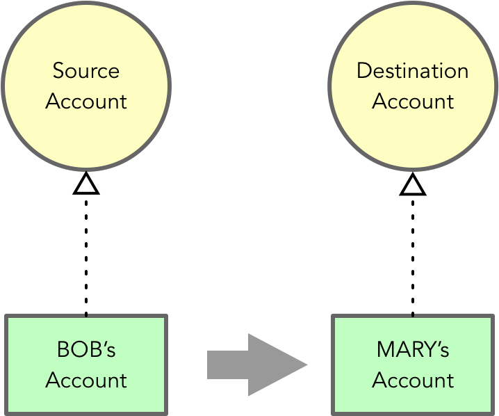

- 001 「战略篇」访谈 DDD 和微服务是什么关系？.md.html
- 002 「战略篇」开篇词：领域驱动设计，重焕青春的设计经典.md.html
- 003 领域驱动设计概览.md.html
- 004 深入分析软件的复杂度.md.html
- 005 控制软件复杂度的原则.md.html
- 006 领域驱动设计对软件复杂度的应对（上）.md.html
- 007 领域驱动设计对软件复杂度的应对（下）.md.html
- 008 软件开发团队的沟通与协作.md.html
- 009 运用领域场景分析提炼领域知识（上）.md.html
- 010 运用领域场景分析提炼领域知识（下）.md.html
- 011 建立统一语言.md.html
- 012 理解限界上下文.md.html
- 013 限界上下文的控制力（上）.md.html
- 014 限界上下文的控制力（下）.md.html
- 015 识别限界上下文（上）.md.html
- 016 识别限界上下文（下）.md.html
- 017 理解上下文映射.md.html
- 018 上下文映射的团队协作模式.md.html
- 019 上下文映射的通信集成模式.md.html
- 020 辨别限界上下文的协作关系（上）.md.html
- 021 辨别限界上下文的协作关系（下）.md.html
- 022 认识分层架构.md.html
- 023 分层架构的演化.md.html
- 024 领域驱动架构的演进.md.html
- 025 案例 层次的职责与协作关系（图文篇）.md.html
- 026 限界上下文与架构.md.html
- 027 限界上下文对架构的影响.md.html
- 028 领域驱动设计的代码模型.md.html
- 029 代码模型的架构决策.md.html
- 030 实践 先启阶段的需求分析.md.html
- 031 实践 先启阶段的领域场景分析（上）.md.html
- 032 实践 先启阶段的领域场景分析（下）.md.html
- 033 实践 识别限界上下文.md.html
- 034 实践 确定限界上下文的协作关系.md.html
- 035 实践 EAS 的整体架构.md.html
- 036 「战术篇」访谈：DDD 能帮开发团队提高设计水平吗？.md.html
- 037 「战术篇」开篇词：领域驱动设计的不确定性.md.html
- 038 什么是模型.md.html
- 039 数据分析模型.md.html
- 040 数据设计模型.md.html
- 041 数据模型与对象模型.md.html
- 042 数据实现模型.md.html
- 043 案例 培训管理系统.md.html
- 044 服务资源模型.md.html
- 045 服务行为模型.md.html
- 046 服务设计模型.md.html
- 047 领域模型驱动设计.md.html
- 048 领域实现模型.md.html
- 049 理解领域模型.md.html
- 050 领域模型与结构范式.md.html
- 051 领域模型与对象范式（上）.md.html
- 052 领域模型与对象范式（中）.md.html
- 053 领域模型与对象范式（下）.md.html
- 054 领域模型与函数范式.md.html
- 055 领域驱动分层架构与对象模型.md.html
- 056 统一语言与领域分析模型.md.html
- 057 精炼领域分析模型.md.html
- 058 彩色 UML 与彩色建模.md.html
- 059 四色建模法.md.html
- 060 案例 订单核心流程的四色建模.md.html
- 061 事件风暴与业务全景探索.md.html
- 062 事件风暴与领域分析建模.md.html
- 063 案例 订单核心流程的事件风暴.md.html
- 064 表达领域设计模型.md.html
- 065 实体.md.html
- 066 值对象.md.html
- 067 对象图与聚合.md.html
- 068 聚合设计原则.md.html
- 069 聚合之间的关系.md.html
- 070 聚合的设计过程.md.html
- 071 案例 培训领域模型的聚合设计.md.html
- 072 领域模型对象的生命周期-工厂.md.html
- 073 领域模型对象的生命周期-资源库.md.html
- 074 领域服务.md.html
- 075 案例 领域设计模型的价值.md.html
- 076 应用服务.md.html
- 077 场景的设计驱动力.md.html
- 078 案例 薪资管理系统的场景驱动设计.md.html
- 079 场景驱动设计与 DCI 模式.md.html
- 080 领域事件.md.html
- 081 发布者—订阅者模式.md.html
- 082 事件溯源模式.md.html
- 083 测试优先的领域实现建模.md.html
- 084 深入理解简单设计.md.html
- 085 案例 薪资管理系统的测试驱动开发（上）.md.html
- 086 案例 薪资管理系统的测试驱动开发（下）.md.html
- 087 对象关系映射（上）.md.html
- 088 对象关系映射（下）.md.html
- 089 领域模型与数据模型.md.html
- 090 领域驱动设计对持久化的影响.md.html
- 091 领域驱动设计体系.md.html
- 092 子领域与限界上下文.md.html
- 093 限界上下文的边界与协作.md.html
- 094 限界上下文之间的分布式通信.md.html
- 095 命令查询职责分离.md.html
- 096 分布式柔性事务.md.html
- 097 设计概念的统一语言.md.html
- 098 模型对象.md.html
- 099 领域驱动设计参考过程模型.md.html
- 100 领域驱动设计的精髓.md.html
- 101 实践 员工上下文的领域建模.md.html
- 102 实践 考勤上下文的领域建模.md.html
- 103 实践 项目上下文的领域建模.md.html
- 104 实践 培训上下文的业务需求.md.html
- 105 实践 培训上下文的领域分析建模.md.html
- 106 实践 培训上下文的领域设计建模.md.html
- 107 实践 培训上下文的领域实现建模.md.html
- 108 实践 EAS 系统的代码模型.md.html
- 109 后记：如何学习领域驱动设计.md.html
- 捐赠
052 领域模型与对象范式（中）
分治
Christepher Alexander 建议，在遇到设计问题时“尽量少用集权的机制”，这样能避免形式和内容的不一致。自治对象并不意味着权利的大一统，因为这会导致职责的绝对控制，形成无所不知的集权的“上帝对象”，这就违背了面向对象设计的基本原则：单一职责原则（Single Responsibility Principle，SRP）。遵循单一职责原则有利于对象的稳定：
- 对象的职责越少，则对该对象的依赖就越少，耦合度减弱，受其他对象的约束与牵制就越少，从而保证了系统的可扩展性；
- 单一职责原则并不是极端地要求我们只能为对象定义一个职责，单一职责指的是公开在外的与该对象紧密相关的一组职责。
遵循自治原则设计的对象必然需要分治，甚至可以说正是自治才为系统各个对象之间的分治提供了良好的基础。对象的分治意味着参与实现一个业务场景的对象需要各依其自治的本色履行本当属于自己的职责，同时将不属于自己职责范围的工作委派给别的对象，形成良好的协作关系。通过参与协作的多个对象之间的默契配合，就可以履行更大的职责；同时，对象通过相互作用和共享职责联系在一起，建立简单、一致的通信机制，就可以避免集权似的解决方案。
以行为进行协作
对象之间若要默契配合，形成良好的协作关系，就需要通过行为进行协作，而不是让参与协作的对象成为数据的提供者。设想在超市购物的场景——顾客（Customer）通过钱包（Wallet）付款给超市收银员（Cashier）。这三个对象之间的协作如下代码所示：
public class Wallet {
private float value;
public Wallet(float value) {
this.value = value;
}
public float getTotalMoney() {
return value;
}
public void setTotalMoney(float newValue) {
value = newValue;
}
public void addMoney(float deposit) {
value += deposit;
}
public void subtractMoney(float debit) {
value -= debit;
}
}
public class Customer {
private String firstName;
private String lastName;
private Wallet myWallet;
public Customer(String firstName, String lastName) {
this(firstName, lastName, new Wallet(0f));
}
public Customer(String firstName, String lastName, Wallet wallet) {
this.firstName = firstName;
this.lastName = lastName;
this.myWallet = wallet;
}
public String getFirstName(){
return firstName;
}
public String getLastName(){
return lastName;
}
public Wallet getWallet(){
return myWallet;
}
}
public class Cashier {
public void charge(Customer customer, float payment) {
Wallet theWallet = customer.getWallet();
if (theWallet.getTotalMoney() > payment) {
theWallet.subtractMoney(payment);
} else {
throw new NotEnoughMoneyException();
}
}
}
在购买超市商品的业务场景下，Cashier 与 Customer 对象之间产生了协作；然而，这种协作关系却是很不合理的。站在顾客的角度讲，他在付钱时必须将自己的钱包交给收银员，暴露了自己的隐私，让钱包处于危险的境地；站在收银员的角度讲，他需要像一个劫匪一般要求顾客把钱包交出来，检查钱包内的钱够了之后，还要从顾客的钱包中掏钱出来完成支付。双方对这次协作都不满意，原因就在于参与协作的 Customer 对象仅仅作为了数据提供者，它为 Cashier 对象提供了 Wallet 数据。
这种职责协作方式违背了“迪米特法则（Demeter Law）”。该法则要求任何一个对象或者方法，只能调用下列对象：
- 该对象本身
- 作为参数传进来的对象
- 在方法内创建的对象
作为参数传入的 Customer 对象，可以被 Cashier 调用，但 Wallet 对象既非通过参数传递，又非方法内创建的对象，当然也不是 Cashier 对象本身。遵循迪米特法则，Cashier 不应该与 Wallet 协作，它甚至都不应该知道 Wallet 对象的存在。
如果从代码坏味道的角度来讲，以上代码属于典型的“依恋情结（Feature Envy）”坏味道。Cashier 对 Customer 的 Wallet 给予了过度的“热情”，Cashier 的 charge() 方法操作的几乎都是 Customer 对象的数据。该坏味道说明职责的分配有误，应该将这些特性“归还”给 Customer 对象：
public class Customer {
private String firstName;
private String lastName;
private Wallet myWallet;
public void pay(float payment) {
// 注意这里不再调用 getWallet()，因为 Wallet 本身就是 Customer 拥有的数据
if (myWallet.getTotalMoney() >= payment) {
myWallet.subtractMoney(payment);
} else {
throw new NotEnoughMoneyException();
}
}
}
public class Cashier {
// charge 行为与 pay 行为进行协作
public void charge(Customer customer, float payment) {
customer.pay(payment);
}
}
当我们将支付行为分配给 Customer 之后，收银员的工作就变轻松了，顾客也不担心钱包被收银员看到了。协作的方式之所以焕然一新，就在于 Customer 不再作为数据的提供者，而是通过支付行为参与协作。Cashier 负责收钱，Customer 负责交钱，二者只需关注协作行为的接口，而不需要了解具体实现该行为的细节。这就是封装概念提到的“隐藏细节”。这些被隐藏的细节其实就是对象的“隐私”，不允许被轻易公开。当 Cashier 不需要了解支付的细节之后，Cashier的工作就变得更加简单，符合 Unix 之父 Dennis Ritchie 和 Ken Thompson 提出的 KISS 原则，即“保持简单和直接（Keep it simple stupid）”的原则。
注意区分重构前后的 Customer 类定义。当我们将 pay() 方法转移到 Customer 类后，去掉了 getWallet() 方法，因为 Customer 不需要将自己的钱包公开出去，至于对 Wallet 钱包的访问，由于 pay() 与 myWallet 字段都定义在 Customer 类中，就可以直接访问定义在类中的私有变量。
《ThoughtWorks 软件开发沉思录》中的“对象健身操”提出了优秀软件设计的九条规则，其中最后一条提出：
不使用任何 Getter/Setter/Property。
这个规则的提出是否打破了许多 Java 或 C# 开发人员的编程习惯？能做到这一点吗？为何要这样要求呢？作者 Jeff Bay 认为：
“如果可以从对象之外随便询问实例变量的值，那么行为与数据就不可能被封装到一处。在严格的封装边界背后，真正的动机是迫使程序员在完成编码之后，一定有为这段代码的行为找到一个适合的位置，确保它在对象模型中的唯一性。”
这一原则其实就是为了避免一个对象在协作场景中“沦落”为一个低级的数据提供者。虽然在面向对象设计中，对象才是一等公民，但对象的行为才是让对象社区活起来的唯一动力。基于这个原则，我们可以继续优化以上代码。我们发现，Wallet 的 totalMoney 属性也无需公开给 Customer。采用行为协作模式，Wallet 应该自己定义判断钱是否足够的方法，而非直接返回 totalMoney：
public class Wallet {
private float value;
public boolean isEnough(float payment) {
return value >= payment;
}
public void addMoney(float deposit) {
value += deposit;
}
public void subtractMoney(float debit) {
value -= debit;
}
}
Customer 的 pay() 方法就可以修改为：
public class Customer {
public void pay(float payment) {
if (myWallet.isEnough(payment)) {
myWallet.subtractMoney(payment);
} else {
throw new NotEnoughMoneyException();
}
}
}
以行为进行协作的方式满足命令而非询问（Tell, don’t ask）原则。这个原则要求一个对象应该命令其他对象做什么，而不是去查询其他对象的状态来决定做什么。显然，顾客应该命令钱包：钱够吗？而不是去查询钱包中装了多少钱，然后由顾客自己来判断钱是否足够。看到了吗？在现实世界，钱包是一个没有生命的东西；但在对象的世界里，钱包拥有了智能意识，它自己知道自己钱是否足够。这就是前面所讲的自治对象的意义。
因此，在进行面向对象设计时，设计者具有“拟人化”的设计思想至为关键。我们需要代入设计对象，就好像它们都是一个个可以自我思考的人一般——Cashier 不需要“知道”支付的细节，因为这些细节是 Customer 的“隐私”。这些隐藏的细节其实就是 Customer 拥有的“知识”，它能够很好地“理解（Understand）”这些知识，并作出符合自身角色的智能判断。因此，对象的分治其实决定于职责的分配。该如何分配职责，要看哪个对象真正“理解”这个职责。
怎么才能理解呢？就是看对象是否拥有理解该职责的知识。知识即信息，信息就是对象所拥有的数据。这就是“信息专家模式（Information Expert Pattern）”的核心内容：信息的持有者即为操作该信息的专家。
如果在设计时能够遵循“信息专家模式”，就可以避免设计出贫血模型，也可以防止将大量的领域逻辑封装到一个大的事务脚本中。每个对象成为了操作信息的专家，就能审时度势地决定职责的履行者究竟是谁，并发出行为协作的请求。由于完成一个完整的职责往往需要分布在不同对象类中的信息，这就意味着需要多个“局部”的信息专家通过协作来完成任务，从而形成了对象的分治。
以角色决定行为
对象分治的核心还是对职责的分配。要做到职责的良好分配，我们应站在角色的角度来安排职责。角色是对象的身份，若以拟人化的方式思考对象世界，就可以设想：究竟是怎样的身份，需得承担怎样的职责，才会与其身份相当，不至于乱了规矩。
确定对象的角色，必须结合具体的业务场景来考虑。相同对象在不同的场景扮演的角色可能完全不同，履行的职责也不相同，角色之间的协作方式自然亦有所不同。角色、职责、协作，这是对象分治需要考虑的核心三要素，它们共同组成了一个完整的业务场景。
例如在设计转账业务场景时，需要考虑参与到转账业务的角色是什么。是账户（Account）吗？如果是账户，该如何区分转出方和转入方？假设是 Bob 要转账给 Mary，那么 Bob 是转出方，Mary 是转入方，他（她）们又都是 Account 对象。显然，在这个业务场景中，对象不能替代角色，否则会抹去协作双方参与业务场景的身份差异：

SourceAccount 与 DestinationAccount 是两个完全不同的角色，一个履行转出的职责，一个履行转入的职责：
public interface SourceAccount {
void transferMoneyTo(DestinationAccount dest, Amount amount);
}
public interface DestinationAccount {
void transferMoneyFrom(AccountId srcAccountId, Amount amount);
}
账户对象可以同时扮演这两个角色，即 Account 类同时实现这两个接口：
代码实现为：
public class Account implements SourceAccount, DestinationAccount {
private AccountId accountId;
private Amount amount;
private Phone phone;
public void transferMoneyTo(DestinationAccount dest, Amount amount) {
if (amount.lessThan(getAvailableBalance()) {
throw new InsufficientFundsException();
}
dest.transferMoneyFrom(accountId, amount);
// 此时的 balance 与 phone 属于 SourceAccount
balance.decreaseBalance(amount);
phone.sendTransferToMessage(accountId, amount);
}
public void transferMoneyFrom(AccountId srcAccountId, Amount amount) {
// 此时的 balance 和 phone 属于 DestinationAccount
balance.increaseBalance(amount);
phone.sendTransferFromMessage(srcAccountId, amount);
}
}
由于接口的定义完全不同，即使 Account 类同时实现了这两个接口，二者也不能互相替换：
SourceAccount src = new Account();
// 不能替换，如下代码不能通过编译
DestinationAccount dest = src;
SourceAccount 与 DestinationAccount 接口就是 Martin Fowler 所说的角色接口（Role Interface）。角色接口是从供应者（Supplier）与消费者（Consumer）二者之间协作的角度来定义的接口，这时的接口代表了业务场景中与其他类型协作的角色。通常，一个供应者对象会实现多个角色接口，每个角色接口对应一种协作模式。与之相反的是头部接口（Header Interface），即一个供应者对应一个头部接口。考虑收发邮件的场景，如果收邮件和发邮件会被用到不同的使用场景，就说明这两个职责不会“捆绑”出现，不是高内聚的，可以被分别定义为两个接口 EmailSender 和 EmailReceiver：
public interface EmailSender {
void send(Message message);
}
public interface EmailReciever {
Message[] receive();
}
此时定义的接口就是角色接口。在提供功能实现时，可以定义一个类 EmailService 同时实现这两个角色接口。相反，如果先定义 EmailService 类，提供收邮件和发邮件功能，然后通过抽象将这个类的所有公有方法都提取到一个接口中，这样的接口就是头部接口。例如：
public interface EmailService {
void send(Message message);
Message[] receive();
}
public class EmailServiceImpl implements EmailService {}
角色接口体现了接口隔离原则（Interface Segregation Principle，ISP）。站在消费者（客户端）的角度讲，接口隔离原则不会强迫消费者依赖于它不使用的方法，这就意味着需要设计最小粒度的接口。例如，消费者 EmailNotifier 仅需要调用 send() 方法，但它要消费的 EmailService 接口却提供了 receive() 这个不需要的方法。如果是消费 EmailSender 接口，就不存在这个问题。
遵循接口隔离原则设计角色接口，就可以针对不同变化独立演化，这样的设计符合前面介绍的分离变化的设计原则。同时，这种角色接口还能提高编码可读性，加强类型验证来保证代码的健壮性。我们可以比较转账服务的两种接口方法定义：
// 不使用角色接口
void transfer(Account source, Account destination, Amount amount);
// 使用角色接口
void transfer(SourceAccount source, DestinationAccount destination, Amount amount);
显然，第一个接口方法定义只能通过形参区分转出方和转入方，且无法通过 Account 类型限制对转出和转入功能的调用，例如可能出现这样的潜在缺陷：
public class TransferingService {
void transfer(Account source, Account destination, Amount amount) {
// 注意：这里应该调用 source 的 transferMoneyTo() 方法
// 但是，由于接口参数没有体现角色的意义，因而无法区分这两个方法
// 如果参数传入的是 SourceAccount 与 DestinationAccount，就能保证被正确调用
// 因为 destination 并没有 transferMoneyTo() 方法
destination.transferMoneyTo(source, amount);
accountRepository.save(source);
accountRepository.save(destination);
}
}
对于转账业务场景来说，SourceAccount 与 DestinationAccount 是参与转账业务的两个主要角色，但它们都不能表达完整的转账业务场景。在领域驱动设计中，往往由领域服务如 TransferingService 来封装完整的具有业务价值的业务场景。
从 DCI（Data、Context和Interaction）模式的角度看，Account 对象是一个数据（Data），体现了系统的领域知识；SourceAccount 与 DestinationAccount 是参与协作（Interaction）的角色，描述了系统究竟做什么；TransferingService 则是一个上下文（Context），代表了具体的业务场景。DCI 模式能够帮助我们理解对象分治的三要素——角色、职责和协作，因为这三个要素都在一个业务上下文的场景之中。至于什么是 DCI 模式，我会在专门的小节中详细介绍。
© 2019 - 2023 Liangliang Lee. Powered by gin and hexo-theme-book.